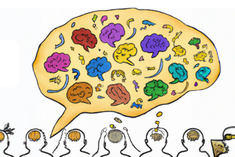

Artificial intelligence (AI) is a field of computer science that focuses on developing intelligent machines capable of performing tasks that typically require human intelligence. It aims to simulate human cognitive abilities, such as learning, reasoning, problem-solving, perception, and language understanding, in machines. AI encompasses a wide range of techniques, algorithms, and methodologies that enable machines to analyze data, recognize patterns, make decisions, and adapt to changing circumstances. The goal of AI is to create machines that can exhibit intelligence and perform tasks autonomously or with minimal human intervention. These machines can learn from experience, adjust their behavior based on feedback, and improve their performance over time. AI has applications in various domains, including healthcare, finance, transportation, education, gaming, and many others. Machine learning is a crucial subset of AI that focuses on enabling machines to learn from data and experiences without explicit programming. It involves the development of algorithms that can automatically learn and make predictions or decisions based on patterns and trends in data. Deep learning, a subset of machine learning, utilizes artificial neural networks inspired by the structure and functioning of the human brain to achieve advanced learning and pattern recognition capabilities. AI techniques include natural language processing (NLP), which enables machines to understand and interpret human language, and computer vision, which empowers machines to perceive and understand visual information. Robotics combines AI with mechanical engineering to design and develop intelligent machines called robots that can interact with the physical world. The potential applications of AI are vast and continually expanding. AI systems can assist in medical diagnosis, automate repetitive tasks, optimize business processes, enhance customer experiences, drive autonomous vehicles, enable virtual assistants and chatbots, and revolutionize various industries. However, AI also raises important considerations such as ethics, privacy, bias, and the impact on the workforce. Ensuring responsible development and deployment of AI technologies is essential to address these concerns and promote the positive and beneficial integration of AI into society. As AI continues to advance, researchers, developers, policymakers, and society as a whole are continually exploring the possibilities, limitations, and ethical implications of this transformative field. With ongoing advancements and interdisciplinary collaboration, AI holds the potential to revolutionize industries, improve lives, and shape the future in remarkable ways.
Introduction of AI
Recent Articles
MIT professor to Congress: “We are at an inflection point” with AI
Aleksander Mądry urges lawmakers to ask rigorous questions about how AI tools are being used by corporations.
May 29, 2023


Helping companies deploy AI models more responsibly
MIT spinout Verta offers tools to help companies introduce, monitor, and manage machine-learning models safely and at scale.
May 29, 2023

Large language models are biased. Can logic help save them?
MIT researchers trained logic-aware language models to reduce harmful stereotypes like gender and racial biases.
May 29, 2023
MIT professor to Congress: “We are at an inflection point” with AI
Aleksander Mądry urges lawmakers to ask rigorous questions about how AI tools are being used by corporations.
May 29, 2023